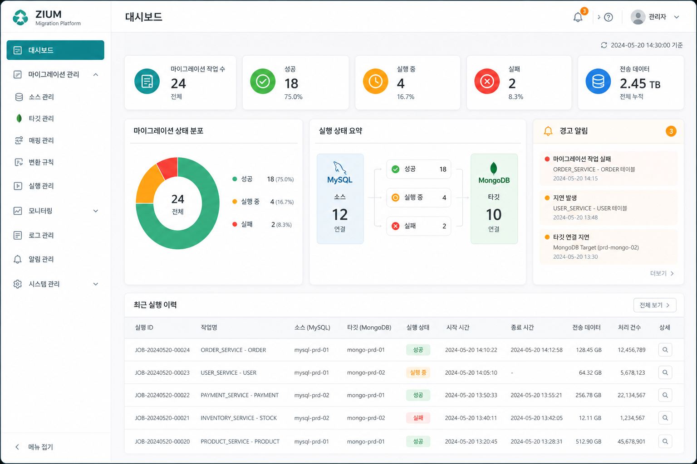
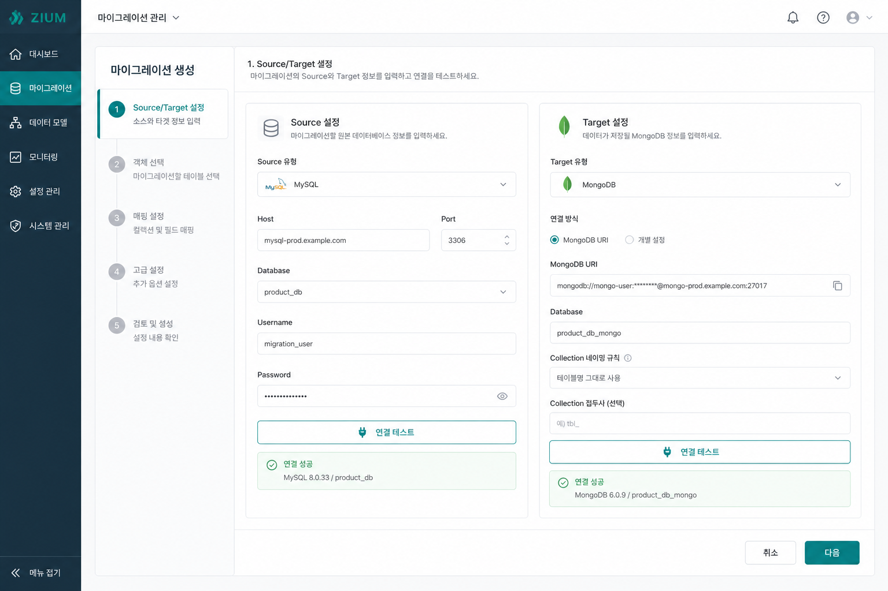

1차 개발 범위 / RDB Migration
RDB 마이그레이션
RDB 마이그레이션
1차 개발 범위
1차 개발의 기준은 커넥션 관리 자체가 아니라 RDB 데이터를 MongoDB로 이관하는 마이그레이션 기능입니다. 따라서 범위는 `소스 연결`, `이관 대상 선택`, `매핑`, `실행`, `결과 확인`까지의 흐름을 중심으로 봐야 합니다.
소스
MySQL 등 RDB에서 테이블/컬럼을 읽어옴
타겟
MongoDB 데이터베이스/컬렉션으로 적재
목표
운영자가 이관 작업을 정의하고 실행 가능하게 만드는 것

1차 범위 핵심
1
RDB Source 연결 설정
2
MongoDB Target 연결 설정
3
테이블/컬럼 선택 및 필드 매핑
4
마이그레이션 실행과 기본 이력 확인
포함 / 제외 범위
1차 포함
- RDB 접속 정보 입력 및 연결 테스트
- MongoDB 접속 정보 입력 및 연결 테스트
- 이관 대상 테이블과 컬럼 선택
- MongoDB 컬렉션 선택 또는 생성
- 기본 필드 매핑과 최소 변환 규칙
- 전체 이관 또는 증분 이관 방식 선택
- 이관 실행, 상태 확인, 최근 실행 이력 조회
후속 단계
- 파일, API, Kafka 등 비-RDB 소스 완성
- 복잡한 변환 규칙 엔진과 고급 미리보기
- 실시간 모니터링 대시보드 고도화
- 알림 시스템, 권한 관리, AI 검증 기능
- 멀티 커넥션 일괄 배치와 고급 스케줄링
1차 사용자 흐름
1
RDB 연결
MySQL 접속 정보 입력 후 소스 연결을 검증합니다.
2
MongoDB 연결
타겟 데이터베이스와 컬렉션 저장 위치를 정합니다.
3
대상 선택
이관할 테이블, 컬럼, 동기화 방식과 주기를 선택합니다.
4
매핑 설정
RDB 컬럼을 MongoDB 문서 필드에 연결합니다.
5
실행 / 확인
마이그레이션을 실행하고 결과와 이력을 확인합니다.
화면 기준 재구성
Migration Wizard
RDB → MongoDB
Source: MySQL
Host / Port / Database / Username / Password / 연결 테스트
Host / Port / Database / Username / Password / 연결 테스트
Target: MongoDB
URI / Database / Collection / 연결 테스트
URI / Database / Collection / 연결 테스트
동기화 옵션
전체 이관 / 증분 이관 / 수동 / 정기 / Cron
전체 이관 / 증분 이관 / 수동 / 정기 / Cron
Migration Scope
핵심 기능
준비
- 소스 연결
- 타겟 연결
정의
- 테이블 선택
- 필드 매핑
실행
- 마이그레이션 실행
- 이력 확인
목업 이미지
대시보드 목업

마이그레이션 생성 목업

개발 산출물
프론트엔드
- RDB → MongoDB 마이그레이션 생성 화면
- 테이블/컬럼 선택 UI
- 필드 매핑 UI
- 실행 결과 / 이력 화면
백엔드
- RDB 연결 테스트 API
- MongoDB 연결 테스트 API
- 테이블/컬럼 메타데이터 조회 API
- 마이그레이션 작업 생성 / 실행 / 이력 조회 API